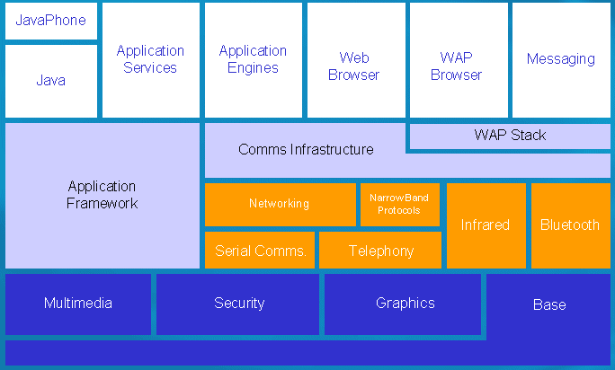

|
| |
Symbian OS is a large system, containing hundreds of
classes and thousands of member functions. Like most complex systems, it is
easiest to approach by dividing it into large areas, and gradually narrowing
your focus down to the areas that are most important to your tasks. The largest
divisions that Symbian has found useful are called subsystems. For
example, the Application Engines subsystem contains all the APIs that can be
used to manipulate data for the standard applications such as
Contacts.
Subsystems can be thought of by third-party developers for the most part of simply conceptual areas that group related functionality together. They aren't binary files such as DLLs, or source files such as headers, but it's still worth knowing about them though for a couple of reasons:
Subsystems are configurable and can exist in a range of ways, some parts of a subsystem being mandatory while others are optional.
The system documentation in this Developer Library uses them consistently to divide up functionality: look at the contents page to the API Guide, and you'll see the subsystems listed there.
The documentation for subsystems is in turn divided up into APIs: groups of classes identified by descriptive English names. These too don't necessarily have a one-to-one relationship with binary libraries or headers, though there is very often a close correspondence. This is just because the requirements for those who need to understand and use the system are sometimes a little different from those of the system implementers. But the detail of libraries and headers are fully given in the API Reference documentation.
If you have used previous versions of the
operating system, you will probably be familiar with module names such as
E32 and BAFL, which derived from directory source
code names. This edition of the documentation usually avoids this type of
terminology in favour of more comprehensible English subsystem and API names.
This change may initially make the system stranger than it is. In fact, there
is a very large degree of carry over from previous releases, and, for example,
the Descriptors API that is described under Buffers and Strings as part of the
subsystem System, is much as it was when referred to as just part of the large
User library (or EUSER). And in particular, the use of the new
names doesn't imply that the name of the header file or the library for a class
has changed: in most cases they haven't (although neither source nor binary
compatibility is promised between this release and previous releases). We do
hope though that new users, and eventually you as well, will find the new
divisions, as consistently used throughout Symbian documentation, simpler to
use and remember.
The "System" subsystem, which existed in v6.0, has been split into two subsystems: "Base" and "Graphics".
|
We can now look at particulars: the following figure shows the subsystems, followed by a brief description of each:

Subsystems
Note that some subsystems (Narrow Band Protocols, Web Browser, WAP Browser) do not currently have APIs available to third-parties. Subsystems concerned with PC connectivity are not shown.
The Base group of APIs cannot be ignored by any developer, whatever the type of program that is being written. An important fact to realise for the developer coming to Symbian OS for the first time is that certain fundamentals of programming are handled through class libraries specifically designed and optimised for phones, rather than through the standard C function library, or the standard C++ library (or that part of it known as the STL). This means that the Base APIs contain the classes that handle strings, arrays, lists, error handling, even basic types used for integers and real numbers. As the name implies, it also contains the APIs for genuine system programmers, who need to manipulate in detail system fundamentals such as threads, processes, and memory.
A good place to start to understand the Base APIs is Essential Idioms, which concentrates on the object oriented nature of the operating system, and the surprises that it might hold for those coming from other platforms.
The Graphics sub-component contains the APIs for drawing to particular types of phones, such as the screen and printers, embedding picture objects, and font and bitmap handling.
The sub-component also contains the Window Server Client-Side API, which provides functionality to draw to windows and receive window events, and the animation APIs which allow animations to be run in a high-priority system thread.
The Application Framework APIs include as their name implies the frameworks that define the application structure and their basic user interface handling. Applications here has a narrower sense than just program: it implies a program with a user interface, rather than say, a server program that runs in the background doing a system task. It can also imply a whole other group of requirements such as how the documents (data) that the application handles are presented to the user.
The scope of these APIs is actually a little larger than just that, as it also includes reusable frameworks for handling such things as text layout, user interface controls, and front end processors (non-keyboard input mechanisms, such as hand-writing recognition).
The phone manufacturer adds their own specialist APIs that provide user interface elements suitable for the screen and input mechanisms that it uses. However, the base classes for these and many of the key application concepts are defined by this subsystem.
The Application Engines APIs provide access to the
application data of the core applications. This makes it straightforward for
third-party applications to be integrated with the core applications, for
example for a new communications application to store manipulate and read
Contacts and
Agenda data.
Alongside the Application Engines APIs, as specialist manipulators of data, are the Multi Media Server APIs, which provides audio and image manipulation, and the Application Services APIs, which provides a range of utility services to applications, from logging and system information, to vCard and vCalendar handling.
As you would expect from a phone OS, there is a rich group of communications related APIs. They are generally smaller and their use more specialist than some of the APIs we have previously discussed.
The Comms Infrastructure APIs provides frameworks and system services for communications and networking. It's required background for those wishing to use particular communications technologies such as Infrared, and Serial Comms.
At a higher-level, Messaging provides a framework for multi-protocol messaging and support for particular messaging protocols, and Telephony provides a comparable framework for telephony services. Finally, WAP Stack provides access to a WAP protocol stack.
Copyright ©2002 Symbian Ltd. 6.1-00174 |
|